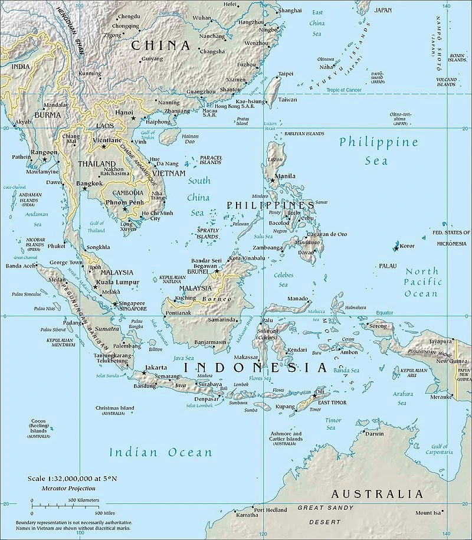
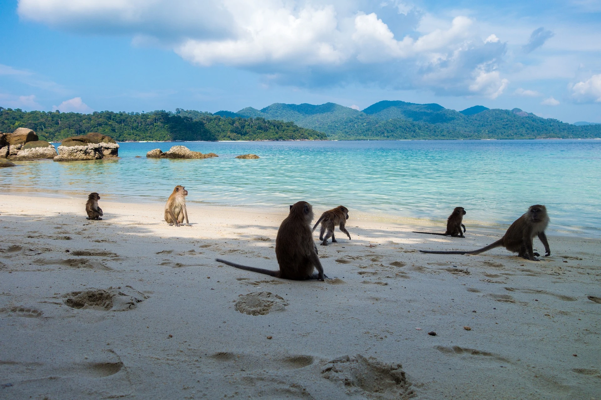

Auf den Punkt
Das bis zu 7440 m tiefe Australasiatische Mittelmeer ist ein westliches Mittelmeer des Pazifischen Ozeans. Mit 9,08 Mio. km² Fläche ist das Australasiatische Mittelmeer weltweit das größte Meer, welches kein Ozean ist.
Ozean Part 1
Das Australasiatische Mittelmeer, das zu den interkontinentalen Mittelmeeren gehört, liegt im australasischen Raum zwischen Südostasien und Australien.
Im Unterschied zum Amerikanischen Mittelmeer – vor allem aber zum Europäischen Mittelmeer – ist das Australasiatische Mittelmeer am wenigsten durch Festländer vom Weltmeer abgetrennt. Während es durch die Malaiische Halbinsel und die engmaschigen Sundainseln gut vom Indik abgetrennt ist, sind die Inselgruppen und -ketten, die das Mittelmeer vom Pazifik abtrennen, wesentlich weitmaschiger.
Ozean Part 2
Es besteht unter anderen aus der Arafurasee, zu welcher der Golf von Carpentaria gehört, der Bandasee, der Celebessee, der Javasee, der Molukkensee, der Seramsee, dem Südchinesischen Meer, zu dem der Golf von Thailand und der Golf von Tonkin gehören, der Sulusee und der Timorsee, zu dem der Joseph-Bonaparte-Golf gehört; Arafura- und Timorsee, der zuletzt genannte Golf und der zuvor erwähnte Golf von Carpentaria sind die südlichsten Bereiche des Australasiatischen Mittelmeeres.
Ozean Part 3
Das Australasiatische Mittelmeer grenzt an oder enthält diese Staaten: Brunei, die Volksrepublik China, die Republik China, Indonesien, Kambodscha, Malaysia, Philippinen, Thailand und Vietnam; dies sind alles Länder, die an das Südchinesische Meer (ein im Australasiatischen Mittelmeer integriertes Nebenmeer des Pazifiks) und dessen Randmeere stoßen. Außerdem grenzt es an das nördliche Australien und an den äußersten Südwesten von Papua-Neuguinea. Des Weiteren liegen Singapur und Osttimor innerhalb dieses Mittelmeeres.
Ozean Part 4
Zu diesem großflächigen Mittelmeer, das zu den ozeanischen Nebenmeeren gezählt wird, gehören neben den zahlreichen großen und kleinen Inseln und Inselgruppen/-ketten sowie Eilanden des Malaiischen Archipels (z. B. Große Sundainseln, Kleine Sundainseln, Molukken und Philippinen-Inseln) auch Groote Eylandt, die Melville-Insel und Taiwan.
Auf den Punkt Part 2
Das Australasiatische Mittelmeer bedeckt mit seinen zahlreichen Teilmeeren 9,08 Mio. km² Fläche. Seine tiefste Stelle liegt 7.440 m unter dem Meeresspiegel.